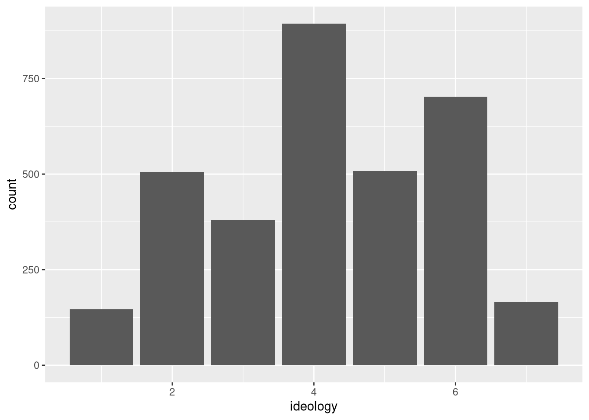
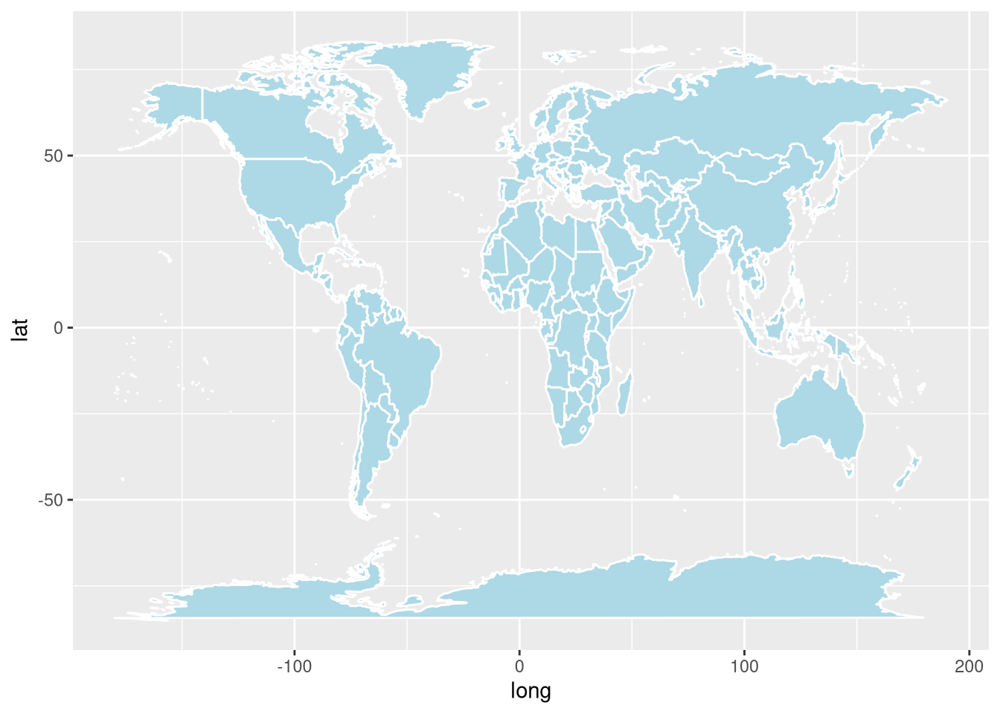
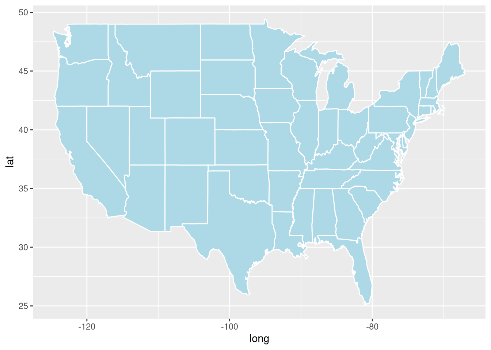
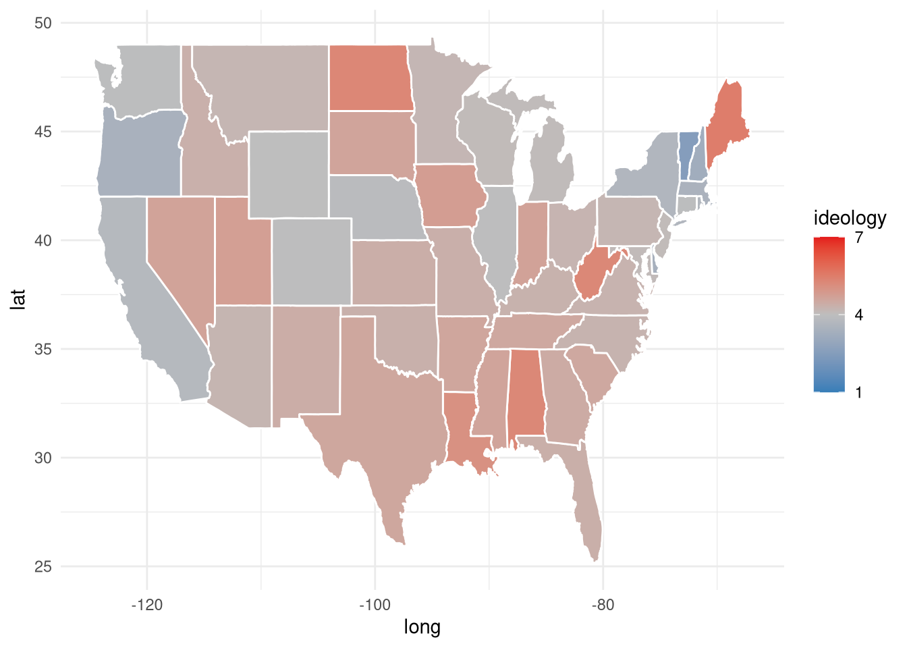
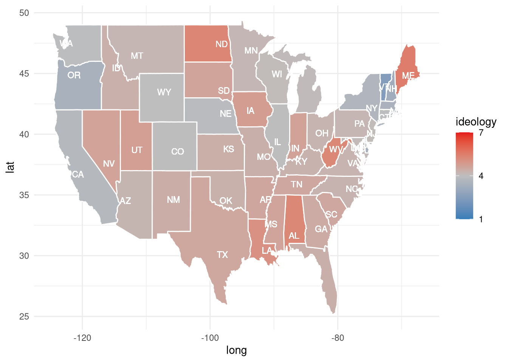
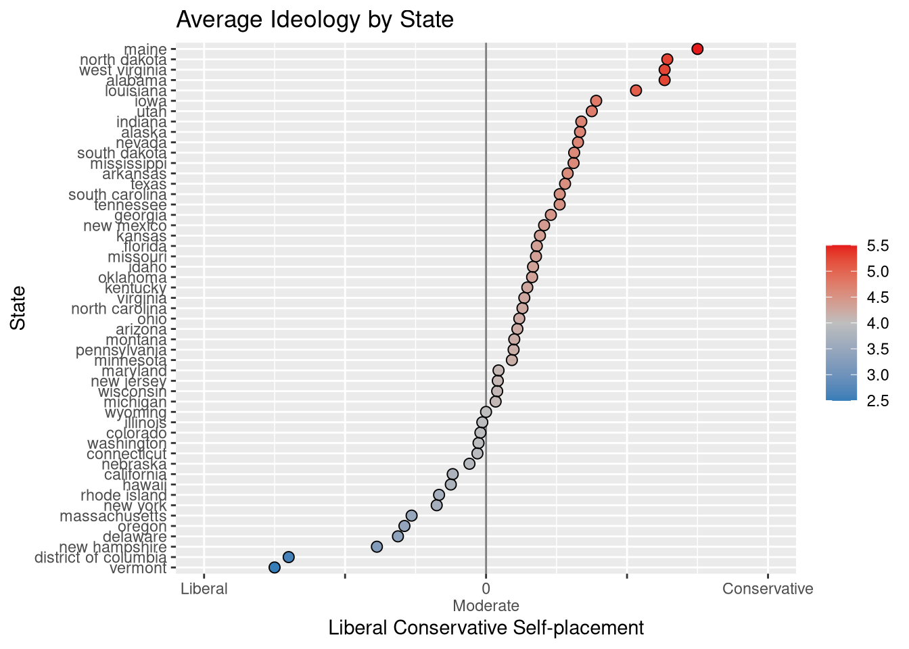

# Loading required packages
library(tidyverse)
# Let's get our data
data_url <- "https://github.com/mickaeltemporao/CMT4A-CMSS-TEMPLATE/raw/main/data/ts_2016.rds"
raw_data <- readRDS(url(data_url,"rb"))
tmp_data <- raw_data %>%
select(
V161126, # ideology
V161010e, # state 2 letters
V163003, # region
) %>%
rename(
ideology = V161126,
state_code = V161010e,
region = V163003,
)
head(tmp_data)## # A tibble: 6 x 3
## ideology state_code region
## <dbl> <chr> <dbl>
## 1 99 LA 3
## 2 5 AR 3
## 3 99 MS 3
## 4 99 TN 3
## 5 4 OH 2
## 6 6 NJ 1tmp_data <- tmp_data %>%
filter(between(ideology, 1, 7)) %>%
mutate(
region = factor(region, labels = c("Northeast", "Midwest", "South", "West")),
)
head(tmp_data)## # A tibble: 6 x 3
## ideology state_code region
## <dbl> <chr> <fct>
## 1 5 AR South
## 2 4 OH Midwest
## 3 6 NJ Northeast
## 4 5 NJ Northeast
## 5 4 TX South
## 6 3 MS Southggplot(tmp_data, aes(x=ideology)) +
geom_bar()
To draw maps we will use the maps package.
# Install required packages
# Run line 9, if you get an error copy line 5 and run it in the console.
# install.packages('maps')
# Loading required packages
library(maps)Once the maps package is loaded, we can easily draw maps!
# Fetching the data
world_map <- map_data("world")
# Making a figure using geom_polygon
ggplot(world_map, aes(x = long, y = lat, group = group)) +
geom_polygon(fill="lightblue", colour = "white")
Let’s make a map of a single country
Let’s look at the US
# Create an object with the states map data
us_map <- map_data("state")
ggplot(us_map, aes(x = long, y = lat, group = group)) +
geom_polygon(fill="lightblue", colour = "white")
What does the map data look like?
us_map## long lat group order region subregion
## 1 -87.46201 30.38968 1 1 alabama <NA>
## 2 -87.48493 30.37249 1 2 alabama <NA>
## 3 -87.52503 30.37249 1 3 alabama <NA>
## 4 -87.53076 30.33239 1 4 alabama <NA>
## 5 -87.57087 30.32665 1 5 alabama <NA>
## 6 -87.58806 30.32665 1 6 alabama <NA>
## 7 -87.59379 30.30947 1 7 alabama <NA>
## 8 -87.59379 30.28655 1 8 alabama <NA>
## 9 -87.67400 30.27509 1 9 alabama <NA>
## 10 -87.81152 30.25790 1 10 alabama <NA>
## 11 -87.88026 30.24644 1 11 alabama <NA>
## 12 -87.92037 30.24644 1 12 alabama <NA>
## 13 -87.95475 30.24644 1 13 alabama <NA>
## 14 -88.00632 30.24071 1 14 alabama <NA>
## 15 -88.01778 30.25217 1 15 alabama <NA>
## 16 -88.01205 30.26936 1 16 alabama <NA>
## 17 -87.99486 30.27509 1 17 alabama <NA>
## 18 -87.95475 30.27509 1 18 alabama <NA>
## 19 -87.90318 30.28082 1 19 alabama <NA>
## 20 -87.82870 30.28655 1 20 alabama <NA>
## 21 -87.80006 30.28655 1 21 alabama <NA>
## 22 -87.80006 30.32665 1 22 alabama <NA>
## 23 -87.81724 30.34385 1 23 alabama <NA>
## 24 -87.84016 30.38395 1 24 alabama <NA>
## 25 -87.85162 30.40114 1 25 alabama <NA>
## 26 -87.87453 30.41260 1 26 alabama <NA>
## 27 -87.90318 30.42406 1 27 alabama <NA>
## 28 -87.92610 30.44698 1 28 alabama <NA>
## 29 -87.93183 30.49281 1 29 alabama <NA>
## 30 -87.94329 30.52719 1 30 alabama <NA>
## 31 -87.92037 30.56157 1 31 alabama <NA>
## 32 -87.91464 30.58449 1 32 alabama <NA>
## 33 -87.92610 30.61886 1 33 alabama <NA>
## [ reached 'max' / getOption("max.print") -- omitted 15504 rows ]us_map %>% count(region)## region n
## 1 alabama 202
## 2 arizona 149
## 3 arkansas 312
## 4 california 516
## 5 colorado 79
## 6 connecticut 91
## 7 delaware 94
## 8 district of columbia 10
## 9 florida 872
## 10 georgia 381
## 11 idaho 233
## 12 illinois 329
## 13 indiana 257
## 14 iowa 256
## 15 kansas 113
## 16 kentucky 397
## 17 louisiana 650
## 18 maine 399
## 19 maryland 566
## 20 massachusetts 286
## 21 michigan 830
## 22 minnesota 373
## 23 mississippi 382
## 24 missouri 315
## 25 montana 238
## 26 nebraska 208
## 27 nevada 70
## 28 new hampshire 125
## 29 new jersey 205
## 30 new mexico 78
## 31 new york 495
## 32 north carolina 782
## 33 north dakota 105
## 34 ohio 238
## 35 oklahoma 284
## 36 oregon 236
## 37 pennsylvania 172
## 38 rhode island 66
## 39 south carolina 304
## 40 south dakota 166
## 41 tennessee 289
## 42 texas 1088
## 43 utah 59
## 44 vermont 129
## 45 virginia 734
## 46 washington 545
## 47 west virginia 373
## 48 wisconsin 388
## 49 wyoming 68The region variable seems to be the state. Let’s rename that variable.
us_map <- us_map %>% rename(state = region)
us_map## long lat group order state subregion
## 1 -87.46201 30.38968 1 1 alabama <NA>
## 2 -87.48493 30.37249 1 2 alabama <NA>
## 3 -87.52503 30.37249 1 3 alabama <NA>
## 4 -87.53076 30.33239 1 4 alabama <NA>
## 5 -87.57087 30.32665 1 5 alabama <NA>
## 6 -87.58806 30.32665 1 6 alabama <NA>
## 7 -87.59379 30.30947 1 7 alabama <NA>
## 8 -87.59379 30.28655 1 8 alabama <NA>
## 9 -87.67400 30.27509 1 9 alabama <NA>
## 10 -87.81152 30.25790 1 10 alabama <NA>
## 11 -87.88026 30.24644 1 11 alabama <NA>
## 12 -87.92037 30.24644 1 12 alabama <NA>
## 13 -87.95475 30.24644 1 13 alabama <NA>
## 14 -88.00632 30.24071 1 14 alabama <NA>
## 15 -88.01778 30.25217 1 15 alabama <NA>
## 16 -88.01205 30.26936 1 16 alabama <NA>
## 17 -87.99486 30.27509 1 17 alabama <NA>
## 18 -87.95475 30.27509 1 18 alabama <NA>
## 19 -87.90318 30.28082 1 19 alabama <NA>
## 20 -87.82870 30.28655 1 20 alabama <NA>
## 21 -87.80006 30.28655 1 21 alabama <NA>
## 22 -87.80006 30.32665 1 22 alabama <NA>
## 23 -87.81724 30.34385 1 23 alabama <NA>
## 24 -87.84016 30.38395 1 24 alabama <NA>
## 25 -87.85162 30.40114 1 25 alabama <NA>
## 26 -87.87453 30.41260 1 26 alabama <NA>
## 27 -87.90318 30.42406 1 27 alabama <NA>
## 28 -87.92610 30.44698 1 28 alabama <NA>
## 29 -87.93183 30.49281 1 29 alabama <NA>
## 30 -87.94329 30.52719 1 30 alabama <NA>
## 31 -87.92037 30.56157 1 31 alabama <NA>
## 32 -87.91464 30.58449 1 32 alabama <NA>
## 33 -87.92610 30.61886 1 33 alabama <NA>
## [ reached 'max' / getOption("max.print") -- omitted 15504 rows ]How does the data we used before look like?
tmp_data## # A tibble: 3,303 x 3
## ideology state_code region
## <dbl> <chr> <fct>
## 1 5 AR South
## 2 4 OH Midwest
## 3 6 NJ Northeast
## 4 5 NJ Northeast
## 5 4 TX South
## 6 3 MS South
## 7 2 NC South
## 8 4 CT Northeast
## 9 2 KS Midwest
## 10 2 DC South
## # … with 3,293 more rowsLet’s create a new variable called “state_name” with the string names of states
tmp_data <- tmp_data %>%
mutate(
state = case_when(
state_code == "AK" ~ "Alaska",
state_code == "AL" ~ "Alabama",
state_code == "AR" ~ "Arkansas",
state_code == "AZ" ~ "Arizona",
state_code == "CA" ~ "California",
state_code == "CO" ~ "Colorado",
state_code == "CT" ~ "Connecticut",
state_code == "DC" ~ "District of Columbia",
state_code == "DE" ~ "Delaware",
state_code == "FL" ~ "Florida",
state_code == "GA" ~ "Georgia",
state_code == "HI" ~ "Hawaii",
state_code == "IA" ~ "Iowa",
state_code == "ID" ~ "Idaho",
state_code == "IL" ~ "Illinois",
state_code == "IN" ~ "Indiana",
state_code == "KS" ~ "Kansas",
state_code == "KY" ~ "Kentucky",
state_code == "LA" ~ "Louisiana",
state_code == "MA" ~ "Massachusetts",
state_code == "MD" ~ "Maryland",
state_code == "ME" ~ "Maine",
state_code == "MI" ~ "Michigan",
state_code == "MN" ~ "Minnesota",
state_code == "MO" ~ "Missouri",
state_code == "MS" ~ "Mississippi",
state_code == "MT" ~ "Montana",
state_code == "NC" ~ "North Carolina",
state_code == "ND" ~ "North Dakota",
state_code == "NE" ~ "Nebraska",
state_code == "NH" ~ "New Hampshire",
state_code == "NJ" ~ "New Jersey",
state_code == "NM" ~ "New Mexico",
state_code == "NV" ~ "Nevada",
state_code == "NY" ~ "New York",
state_code == "OH" ~ "Ohio",
state_code == "OK" ~ "Oklahoma",
state_code == "OR" ~ "Oregon",
state_code == "PA" ~ "Pennsylvania",
state_code == "RI" ~ "Rhode Island",
state_code == "SC" ~ "South Carolina",
state_code == "SD" ~ "South Dakota",
state_code == "TN" ~ "Tennessee",
state_code == "TX" ~ "Texas",
state_code == "UT" ~ "Utah",
state_code == "VA" ~ "Virginia",
state_code == "VT" ~ "Vermont",
state_code == "WA" ~ "Washington",
state_code == "WI" ~ "Wisconsin",
state_code == "WV" ~ "West Virginia",
state_code == "WY" ~ "Wyoming",
)
)
tmp_data## # A tibble: 3,303 x 4
## ideology state_code region state
## <dbl> <chr> <fct> <chr>
## 1 5 AR South Arkansas
## 2 4 OH Midwest Ohio
## 3 6 NJ Northeast New Jersey
## 4 5 NJ Northeast New Jersey
## 5 4 TX South Texas
## 6 3 MS South Mississippi
## 7 2 NC South North Carolina
## 8 4 CT Northeast Connecticut
## 9 2 KS Midwest Kansas
## 10 2 DC South District of Columbia
## # … with 3,293 more rowsThe state in the us_map data is written with a lowercase. We need those columns to match!
tmp_data <- tmp_data %>% mutate(state = tolower(state))
tmp_data## # A tibble: 3,303 x 4
## ideology state_code region state
## <dbl> <chr> <fct> <chr>
## 1 5 AR South arkansas
## 2 4 OH Midwest ohio
## 3 6 NJ Northeast new jersey
## 4 5 NJ Northeast new jersey
## 5 4 TX South texas
## 6 3 MS South mississippi
## 7 2 NC South north carolina
## 8 4 CT Northeast connecticut
## 9 2 KS Midwest kansas
## 10 2 DC South district of columbia
## # … with 3,293 more rowsLet’s get the average ideology by state
state_idl <- tmp_data %>% group_by(state) %>% summarize(ideology = mean(ideology))
state_idl## # A tibble: 51 x 2
## state ideology
## * <chr> <dbl>
## 1 alabama 5.27
## 2 alaska 4.67
## 3 arizona 4.22
## 4 arkansas 4.58
## 5 california 3.76
## 6 colorado 3.96
## 7 connecticut 3.94
## 8 delaware 3.38
## 9 district of columbia 2.6
## 10 florida 4.36
## # … with 41 more rowsWe now have a dataset with a matching state column and the average ideology by state. We can join these 2 datasets together and try to visualize the ideology by state.
ideology_map <- us_map %>% left_join(state_idl)## Joining, by = "state"ggplot(ideology_map, aes(long, lat)) +
geom_polygon(aes(fill = ideology, group = group), color = "white") +
scale_fill_gradient2(
low = "#377eb8", mid = "grey", midpoint = 4,
high = "#e41a1c", limits = c(1, 7), breaks = c(1, 4 ,7)
) +
theme_minimal() I might not know all the state names let’s add them!
centroids <- us_map %>% group_by(state) %>% summarise(long = mean(long), lat = mean(lat))
centroids <- centroids %>% left_join(tmp_data)## Joining, by = "state" ggplot(ideology_map, aes(long, lat)) +
geom_polygon(aes(fill = ideology, group = group), color = "white") +
geom_text(data=centroids, aes(label = state_code, x = long, y = lat), size=3, color="white") +
scale_fill_gradient2(
low = "#377eb8", mid = "grey", midpoint = 4,
high = "#e41a1c", limits = c(1, 7), breaks = c(1, 4 ,7)
) +
theme_minimal()
Some like maps, some might find more classic figures easier to understand.
ggplot(
state_idl, aes(x = ideology, y = reorder(state, ideology))) +
geom_vline(xintercept = 4, color = "black", alpha=.5) +
geom_point(aes(color=ideology), size = 2) +
geom_point(shape=1, size=2.5) +
scale_x_continuous(
limits = c(2,6),
breaks = 2:6,
labels = c("Liberal", "", "0\nModerate", "", "Conservative")
) +
scale_color_gradient2(low="#377eb8", mid="grey", high="#e41a1c", midpoint=4) +
labs(
title = "Average Ideology by State",
y = "State",
x = "Liberal Conservative Self-placement",
color = ""
)
Copyright © Mickael Temporão, 2020, GNU Affero General Public License v3.0.